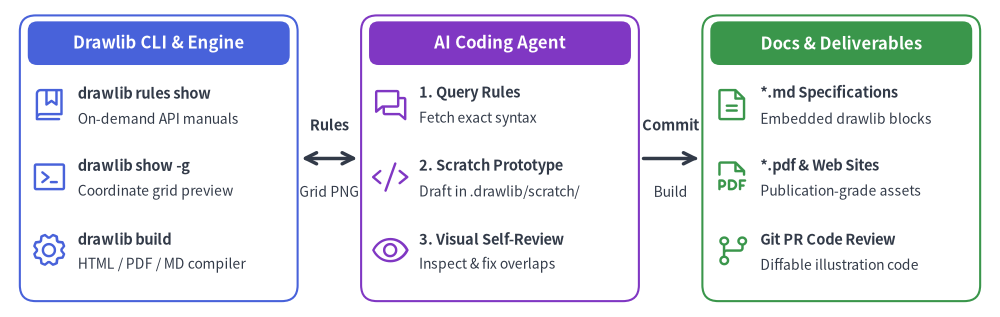
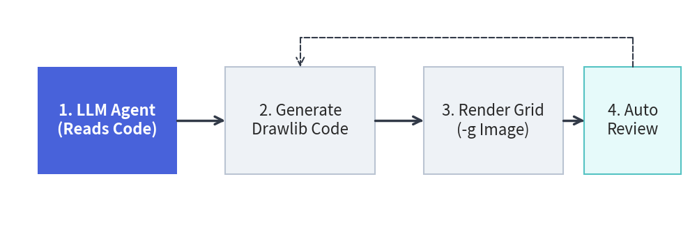

AI-Driven Workflow & Agent Setup
Drawlib v0.3 is engineered from the ground up for autonomous AI coding agents (such as Claude Code, Cursor, Gemini, and GitHub Copilot). Instead of requiring human engineers to manually craft technical specifications and draw architecture diagrams, Drawlib makes it possible to delegate the entire documentation lifecycle to AI agents.

Source Code
from drawlib.canvas import save, setup
from drawlib.icons import phosphor
from drawlib.lines import line
from drawlib.shapes import rectangle
from drawlib.styles import Styles
from drawlib.text import text
setup(width=126, height=40)
header_ts = Styles.WhiteBold.patch(text_size=12.0)
ts_title = Styles.DarkBold.patch(text_size=10.5, halign="left")
ts_sub = Styles.Dark.patch(text_size=10.0, halign="left")
# 1. Drawlib (CLI & Knowledge Base)
rectangle((20.0, 20.0), width=35.0, height=36.0, style=Styles.PrimaryOutline.patch(shape_r=2.0))
rectangle((20.0, 34.5), width=33.0, height=5.5, style=Styles.PrimaryFlat.patch(shape_r=1.2), text="Drawlib CLI & Engine", text_style=header_ts)
phosphor.book_bookmark(xy=(6.2, 26.8), width=4.8, style=Styles.Primary)
text((9.8, 28.2), text="drawlib rules show", style=ts_title)
text((9.8, 25.0), text="On-demand API manuals", style=ts_sub)
phosphor.terminal_window(xy=(6.2, 17.6), width=4.8, style=Styles.Primary)
text((9.8, 19.0), text="drawlib show -g", style=ts_title)
text((9.8, 15.8), text="Coordinate grid preview", style=ts_sub)
phosphor.gear(xy=(6.2, 8.4), width=4.8, style=Styles.Primary)
text((9.8, 9.8), text="drawlib build", style=ts_title)
text((9.8, 6.6), text="HTML / PDF / MD compiler", style=ts_sub)
# 2. AI Agent (Autonomous Partner)
rectangle((63.0, 20.0), width=35.0, height=36.0, style=Styles.AccentOutline.patch(shape_r=2.0))
rectangle((63.0, 34.5), width=33.0, height=5.5, style=Styles.AccentFlat.patch(shape_r=1.2), text="AI Coding Agent", text_style=header_ts)
phosphor.chats(xy=(49.2, 26.8), width=4.8, style=Styles.Accent)
text((52.8, 28.2), text="1. Query Rules", style=ts_title)
text((52.8, 25.0), text="Fetch exact syntax", style=ts_sub)
phosphor.code(xy=(49.2, 17.6), width=4.8, style=Styles.Accent)
text((52.8, 19.0), text="2. Scratch Prototype", style=ts_title)
text((52.8, 15.8), text="Draft in .drawlib/scratch/", style=ts_sub)
phosphor.eye(xy=(49.2, 8.4), width=4.8, style=Styles.Accent)
text((52.8, 9.8), text="3. Visual Self-Review", style=ts_title)
text((52.8, 6.6), text="Inspect & fix overlaps", style=ts_sub)
# 3. Docs / Illustration (Deliverables)
rectangle((106.0, 20.0), width=35.0, height=36.0, style=Styles.SuccessOutline.patch(shape_r=2.0))
rectangle((106.0, 34.5), width=33.0, height=5.5, style=Styles.SuccessFlat.patch(shape_r=1.2), text="Docs & Deliverables", text_style=header_ts)
phosphor.file_text(xy=(92.2, 26.8), width=4.8, style=Styles.Success)
text((95.8, 28.2), text="*.md Specifications", style=ts_title)
text((95.8, 25.0), text="Embedded drawlib blocks", style=ts_sub)
phosphor.file_pdf(xy=(92.2, 17.6), width=4.8, style=Styles.Success)
text((95.8, 19.0), text="*.pdf & Web Sites", style=ts_title)
text((95.8, 15.8), text="Publication-grade assets", style=ts_sub)
phosphor.git_branch(xy=(92.2, 8.4), width=4.8, style=Styles.Success)
text((95.8, 9.8), text="Git PR Code Review", style=ts_title)
text((95.8, 6.6), text="Diffable illustration code", style=ts_sub)
# Connections (Drawlib <-> AI -> Docs)
line((38.0, 20.0), (45.0, 20.0), arrow_head="<->", style=Styles.DarkBold)
text((41.5, 24.2), text="Rules", style=Styles.DarkBold.patch(text_size=10.5))
text((41.5, 15.8), text="Grid PNG", style=Styles.Dark.patch(text_size=10.0))
line((81.0, 20.0), (88.0, 20.0), arrow_head="->", style=Styles.DarkBold)
text((84.5, 24.2), text="Commit", style=Styles.DarkBold.patch(text_size=10.5))
text((84.5, 15.8), text="Build", style=Styles.Dark.patch(text_size=10.0))
save()
The AI-Native Collaboration Model
Drawlib provides a tightly integrated tripartite architecture between the library's on-demand knowledge engine, the autonomous AI coding agent, and version-controlled project documentation.
Why Drawlib is Ideal for AI Agents
When tasked with generating technical illustrations, AI agents typically struggle with raw SVG generation or GUI design tools:
- Raw SVGs are brittle: LLMs frequently miscalculate coordinate bounds, leading to clipped text and misaligned arrows.
- Low-level Matplotlib requires boilerplate: Matplotlib is designed for statistical plots, not clean software architecture schemas.
- GUI tools cannot be driven by agents: AI agents cannot drag and drop shapes in Visio or Figma.
- High-Level Declarative Abstractions: Instead of drawing raw boxes and wires, an agent simply writes
ArchitectureDiagram,ERDiagram, orFlowDiagram. The library handles orthogonal routing, padding, and marker styling automatically. - Built-in Visual Harmony: Predefined semantic styles (
Styles.PrimaryFlat,Styles.AccentFlat) ensure that AI-generated diagrams look publication-ready without fine-tuning color codes.
Why Agents Don't Hallucinate Drawlib Code
Unlike traditional libraries where agents often hallucinate outdated APIs or struggle with deprecated options, Drawlib eliminates hallucinations through active command-line guidance:
- On-Demand Rule Injection: Rather than stuffing thousands of tokens of API documentation into the agent's prompt context, the agent simply queries
drawlib rules show <topic>when it needs exact signatures. - Deterministic Geometry: Agents do not have to guess rendering outcomes; they run
drawlib show -gto render images with absolute millimeter grids and verify their work visually.
To enable your AI agent to author Drawlib illustrations and documentation, configure your environment with Drawlib's core guidelines.
1. Configure Workspace Rules
Add the Drawlib agent instructions to your project's rule file:
- Cursor: Paste the instructions into
.cursorrulesor.cursor/rules/drawlib.md. - Claude Code: Add instructions to your project's
CLAUDE.md. - Gemini / Generic Agents: Place instructions in
.agents/rules/drawlib.md.
You can dump the official agent instruction template directly using the CLI:
# Display the bootstrap agent manual
$ uv run drawlib rules show agent-instruction
2. Project-First Rule (drawlib init)
Teach your agent to never create bare .py files in an uninitialized directory or build project folders manually. Always scaffold a Drawlib project first so styles.py (theme & language fonts), utils.py, _assets/, and build.sh are properly configured:
# Standalone diagram image(s) only -> images_src/*.py -> images/*.png
$ uv run drawlib init images [-l <lang>] [-s <style>]
# Linear technical document / RFC / PDF -> doc_src/*.md
$ uv run drawlib init doc [target] [-l <lang>] [-s <style>]
# Multi-page documentation website -> docs_src/**/*.md
$ uv run drawlib init site [target] [-l <lang>] [-s <style>]
# 16:9 presentation slide deck -> slide_src/*.md
$ uv run drawlib init slide [target] [-l <lang>] [-s <style>]
3. Essential Commands & On-Demand Rules Catalog
Ensure your agent knows how to query on-demand rule topics and preview drawings with a coordinate grid:
| Purpose | Command |
|---|---|
| List Available Rule Topics | uv run drawlib rules list |
| Canvas & Lifecycle Overview | uv run drawlib rules show overview |
| Style Guide & 50%+ Neutral Rule | uv run drawlib rules show style-guide |
| Animation Loop & Idioms | uv run drawlib rules show anim-guide |
| Autonomous 3-Stage Review & Font Math | uv run drawlib rules show review-guide |
| Project Overview (4 Archetypes) | uv run drawlib rules show project-overview |
Project Guides (images, doc, site, slide) |
uv run drawlib rules show project-<images|doc|site|slide> |
CLI Reference (build, show, cache) |
uv run drawlib rules show cli |
| Unified API Cheat Sheet | uv run drawlib rules show api |
Auto-Layout Graphs (drawlib.graph) |
uv run drawlib rules show lib-graph |
Domain Diagrams (drawlib.diagrams) |
uv run drawlib rules show lib-diagrams |
SmartArts & GeoMap (drawlib.smartarts) |
uv run drawlib rules show lib-smartarts |
Quantitative Charts (drawlib.charts) |
uv run drawlib rules show lib-charts |
| Render Named Markdown Block Preview | uv run drawlib show <md_path> <diagram.png> -g -o .drawlib/scratch/preview.png |
| Render Standalone Script Preview | uv run drawlib show <script.py> -g -o .drawlib/scratch/preview.png |
| Build Full Project | ./<target>_src/build.sh or uv run drawlib build html docs_src/ -o docs_html/ |
The Autonomous Verification Loop
Teach your agent to follow Drawlib's autonomous self-correction loop when creating diagrams:

Source Code
from drawlib.canvas import save, setup
from drawlib.icons import phosphor
from drawlib.lines import line
from drawlib.shapes import rectangle
from drawlib.styles import Styles
from drawlib.text import text
setup(width=126, height=44)
# 1. Read Context (Hero node)
rectangle((16.5, 17.5), width=26.0, height=24.0, style=Styles.PrimaryFlat.patch(shape_r=1.8))
phosphor.robot((16.5, 23.5), width=5.6, style=Styles.WhiteBold)
text((16.5, 14.5), "1. Read Context", style=Styles.WhiteBold.patch(text_size=11.0))
text((16.5, 9.5), "Rules & Repo", style=Styles.White.patch(text_size=10.0))
# 2. Author Code
rectangle((47.5, 17.5), width=26.0, height=24.0, style=Styles.Neutral.patch(shape_r=1.8))
phosphor.code((47.5, 23.5), width=5.6, style=Styles.Primary)
text((47.5, 14.5), "2. Author Code", style=Styles.DarkBold.patch(text_size=11.0))
text((47.5, 9.5), "Drawlib Python", style=Styles.Dark.patch(text_size=10.0))
# 3. Render Grid
rectangle((78.5, 17.5), width=26.0, height=24.0, style=Styles.Neutral.patch(shape_r=1.8))
phosphor.grid_four((78.5, 23.5), width=5.6, style=Styles.Primary)
text((78.5, 14.5), "3. Render Grid", style=Styles.DarkBold.patch(text_size=11.0))
text((78.5, 9.5), "drawlib show -g", style=Styles.Dark.patch(text_size=10.0))
# 4. Visual Review
rectangle((109.5, 17.5), width=26.0, height=24.0, style=Styles.SecondaryNeutral.patch(shape_r=1.8))
phosphor.eye((109.5, 23.5), width=5.6, style=Styles.Primary)
text((109.5, 14.5), "4. Visual Review", style=Styles.DarkBold.patch(text_size=11.0))
text((109.5, 9.5), "Inspect PNG", style=Styles.Dark.patch(text_size=10.0))
# Forward arrows
line((30.0, 17.5), (34.0, 17.5), arrow_head="->", style=Styles.DarkBold)
line((61.0, 17.5), (65.0, 17.5), arrow_head="->", style=Styles.DarkBold)
line((92.0, 17.5), (96.0, 17.5), arrow_head="->", style=Styles.DarkBold)
# Feedback loop
line((109.5, 29.8), (109.5, 35.5), style=Styles.DarkDashed)
line((109.5, 35.5), (47.5, 35.5), style=Styles.DarkDashed)
line((47.5, 35.5), (47.5, 29.8), arrow_head="->", style=Styles.DarkDashed)
text((78.5, 39.2), "Self-Correct Coordinates & Re-render", style=Styles.DarkBold.patch(text_size=11.0))
save()
- Inspect Context: The agent inspects actual repository files (models, API routers, database schemas) to understand the architecture.
- Draft Illustration: The agent scaffolds a project via
drawlib init(if not already present) and authors the drawing code inimages_src/<name>.pyor an embeddeddrawlibMarkdown block withfile:<diagram.png>. - Render Image with Grid (
-g):
uv run drawlib show <md_path> <diagram.png> -g -o .drawlib/scratch/preview.png(oruv run drawlib show images_src/<name>.py -g -o .drawlib/scratch/preview.png). - Multimodal Self-Review: The agent inspects the rendered PNG with its vision/file viewing tool, checking for:
- Label overflow or text clipping outside boxes.
- Overlapping arrow lines or awkward elbow routings.
- Missing perimeter margins around canvas borders.
- Auto-Adjust & Finalize: The agent adjusts coordinates, re-renders until clean, and builds the final project outputs.
[!TIP] For complete system prompts, rule topic catalogues, and advanced automated CI/CD integration, proceed to Chapter 9: AI Agents & Advanced Integration.